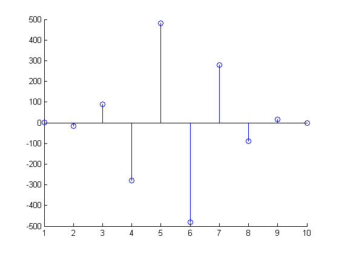

This gives some examples of performing arithmetic and linear algebra with single precision data. It also shows an example M-File where the results are computed appropriately in single or double precision depending on the input.
Let's first create some data, which is double precision by default.
Ad = [1 2 0; 2 5 -1; 4 10 -1]
Ad =
1 2 0
2 5 -1
4 10 -1
We can convert data to single precision with the single function.
A = single(Ad); % or A = cast(Ad,'single');
We can also create single precision zeros and ones with their respective functions.
n=1000; Z=zeros(n,1,'single'); O=ones(n,1,'single');
Let's look at the variables in the workspace.
whos A Ad O Z n
Name Size Bytes Class A 3x3 36 single array Ad 3x3 72 double array O 1000x1 4000 single array Z 1000x1 4000 single array n 1x1 8 double array Grand total is 2019 elements using 8116 bytes
We can see that some of the variables are of type single and that the variable A (the single precision verion of Ad) takes half the number of bytes of memory to store because singles require just four bytes (32-bits), whereas doubles require 8 bytes (64-bits).
We can perform standard arithmetic and linear algebra on singles.
B = A' % Matrix Transpose
B =
1 2 4
2 5 10
0 -1 -1
whos B
Name Size Bytes Class B 3x3 36 single array Grand total is 9 elements using 36 bytes
We see the result of this operation, B, is a single.
C = A * B % Matrix multiplication
C =
5 12 24
12 30 59
24 59 117
C = A .* B % Elementwise arithmetic
C =
1 4 0
4 25 -10
0 -10 1
X = inv(A) % Matrix inverse
X =
5 2 -2
-2 -1 1
0 -2 1
I = inv(A) * A % Confirm result is identity matrix
I =
1 0 0
0 1 0
0 0 1
I = A \ A % Better way to do matrix division than inv
I =
1 0 0
0 1 0
0 0 1
E = eig(A) % Eigenvalues
E =
3.7321
0.2679
1.0000
F = fft(A(:,1)) % FFT
F = 7.0000 -2.0000 + 1.7321i -2.0000 - 1.7321i
S = svd(A) % Singular value decomposition
S =
12.3171
0.5149
0.1577
P = round(poly(A)) % The characteristic polynomial of a matrix
P =
1 -5 5 -1
R = roots(P) % Roots of a polynomial
R =
3.7321
1.0000
0.2679
Q = conv(P,P) % Convolve two vectors
R = conv(P,Q)
Q =
1 -10 35 -52 35 -10 1
R =
1 -15 90 -278 480 -480 278 -90 15 -1
stem(R); % Plot the result
 Now let's look at a function to compute enough terms in the Fibonacci sequence so the ratio is less than the correct machine epsilon (eps) for datatype single or double.
% How many terms needed to get single precision results? fibodemo('single') % How many terms needed to get double precision results? fibodemo('double') % Now let's look at the working code. type fibodemo % Notice that we initialize several of our variables, |fcurrent|, % |fnext|, and |goldenMean|, with values that are dependent on the % input datatype, and the tolerance |tol| depends on that type as % well. Single precision requires that we calculate fewer terms than % the equivalent double precision calculation.
ans =
19
ans =
41
function nterms = fibodemo(dtype)
%FIBODEMO Used by SINGLEMATH demo.
% Calculate number of terms in Fibonacci sequence.
% Copyright 1984-2004 The MathWorks, Inc.
% $Revision: 1.1.4.1 $ $Date: 2004/03/22 23:53:55 $
fcurrent = ones(dtype);
fnext = fcurrent;
goldenMean = (ones(dtype)+sqrt(5))/2;
tol = eps(goldenMean);
nterms = 2;
while abs(fnext/fcurrent - goldenMean) >= tol
nterms = nterms + 1;
temp = fnext;
fnext = fnext + fcurrent;
fcurrent = temp;
end